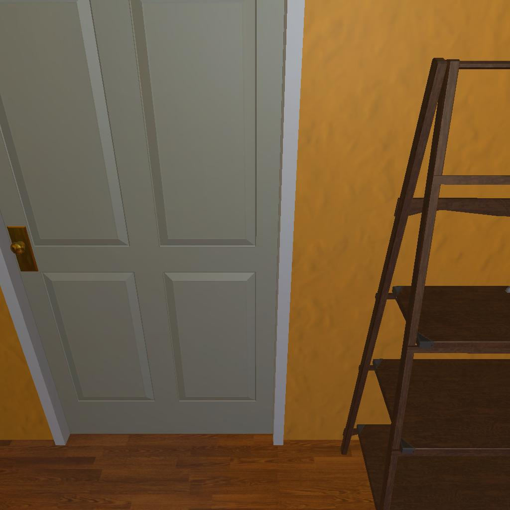

---------------------------------------------------------task: 3---------------------------------------------------------
--------------------------------------------------------------------------------------------------------------------------------------------------------------------
--------------------------------------------------------------------------------------------------------------------------------------------------------------------
Step:--------------------------------------------------------------------------2-------------------------------------------------------------------------------
----------------------------------------
VLM Prompt:
**Task**
Please perform as an embodied AI agent. Our final objective is to look at plate under the floorlamp. Below is the plan for completing the task, the current observation, alongside historical data and admissible actions for the next step. Please determine the best action for the next step!
**Plan**
Below is a detailed step-by-step plan to complete the task.
1. Find a plate.
2. Pick up the plate.
3. Locate a floorlamp.
4. Turn on the floorlamp.
5. Stand under the floorlamp with the plate in hand.
6. Look at the plate while standing under the floorlamp.
**Current Observation**
Displayed is an image capturing the current position of the agent.
Objects in The Image: ['door', 'doorknob', 'wall', 'shelf']
**History Information**
Displayed are the previous observations with their corresponding actions.
State 0:
No history.
State 1:
1. Step Index in the Plan: 1
2. Objects: Television, Glass Table
3. Action: go to shelf 1
State 2:
1. Step Index in the Plan: 1
2. Objects: Television, TV Stand, Trash Bin
3. Action: go to shelf 3
**Admissible Actions**
(1): go to armchair 1
(2): go to garbagecan 1
(3): go to tvstand 1
(4): go to shelf 2
(5): go to sofa 1
(6): go to coffeetable 1
(7): go to sidetable 1
(8): go to sidetable 2
(9): go to drawer 1
(10): go to shelf 4
(11): go to shelf 5
(12): take statue 2 from shelf 3
**Analysis Guideline**
1. Analyze the history and current observation, and then determine our current step in the plan and our current place.
2. List all visible objects related to the task in the current observation, without summarizing any as "various items."
3. Analyze the objects in the current observation based on the history and the requirements for the current step, and then determine if we can complete the step with the current observation.
4. Analyze and decide on the most appropriate action to take.
5. Summarize the analysis using the following format: "Analysis: [The summarization of the analysis], The Most Appropriate Action: (i which is the integer.): [Selected action]"
**Notes**
1. We must complete each step of the plan in order and cannot skip steps when the previous ones are not finished.
2. For "Go to" actions listed as "go to xxx [n]", interpret this as there are n distinct actions available: "go to xxx 1", "go to xxx 2", ..., "go to xxx n". Select one specific action from these options instead of using "go to xxx [n]".
3. If receptacles such as drawers, cabinets, and so forth are closed in the current observation, we may try to open them.
4. Pay attention to synonyms and ensure clarity in the terms used.
5. We must determine and provide the single action which must be in the **Admissible Actions**.
6. If there is no history available, we are at the first step and the current place is "Unknown".
**Answer**
Please select the most suitable action by following the **Analysis Guideline**, keeping the above **Notes** in mind.
----------------------------------------
----------------------------------------
VLM Response:
Analysis: The current step in the plan is to find a plate. Based on the history, the agent has already visited shelf 1 and shelf 3 without finding a plate. The current observation shows a door and a shelf, but no plate is visible. Since the plan requires us to find a plate, and the current observation does not allow us to complete this step, we should continue searching for the plate by visiting different shelves or areas where a plate might be located. Among the admissible actions, going to another shelf seems to be the most relevant action to take in order to find a plate.
The Most Appropriate Action: (11): go to shelf 5
----------------------------------------
----------------------------------------
>>> Refine VLM Response and Get Pure Action: go to shelf 5
----------------------------------------
-----------------------------------------------------------------
Running time: 9.380828380584717 seconds
Total Money: 0
-----------------------------------------------------------------
-----------------------------------------------------------------
Summarization Prompt:
**Context**
Analysis: Since there is no history information, we are at the first step in the plan, which is to find a statue. The current place is unknown. In the current observation, we see a floorlamp next to an armchair with a small table that has a small object on it, which could potentially be the statue we are looking for. Since the plan requires us to find a statue first and it appears there might be one on the table next to the armchair, we should investigate this object to determine if it is the statue we need.
The Most Appropriate Action: (1): go to armchair 1
**Summary**
1. Step Index in the Plan: 1
2. Objects: Floorlamp, Armchair, Small Table, Small Object (potential statue)
3. Action: go to armchair 1
**Context**
Analysis: The current step in the plan is to find a plate. Based on the history, the agent has already visited shelf 1 and shelf 3 without finding a plate. The current observation shows a door and a shelf, but no plate is visible. Since the plan requires us to find a plate, and the current observation does not allow us to complete this step, we should continue searching for the plate by visiting different shelves or areas where a plate might be located. Among the admissible actions, going to another shelf seems to be the most relevant action to take in order to find a plate.
The Most Appropriate Action: (11): go to shelf 5
Please summarize the context by following above examples when providing the summary, and ensure that only the summary is included, without any extra explanation.
**Summary**
-----------------------------------------------------------------
-----------------------------------------------------------------
Summarization Response:
1. Step Index in the Plan: 2
2. Objects: Door, Shelf (number unspecified)
3. Action: go to shelf 5
-----------------------------------------------------------------
-----------------------------------------------------------------
Text Observation:You arrive at loc 12. On the shelf 5, you see a statue 2.
-----------------------------------------------------------------
UNSUCCEED